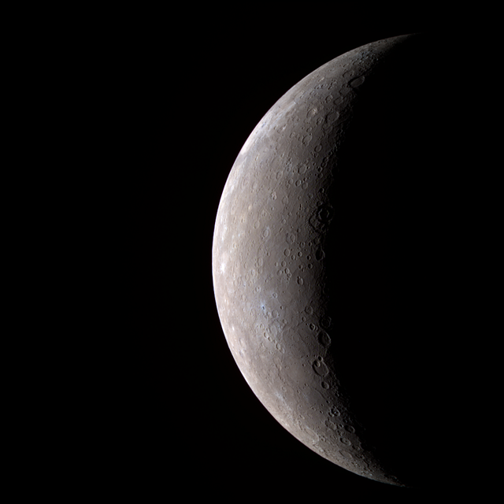

A Merkúr a Naprendszer legbelső és legkisebb bolygója, a Nap körüli keringési ideje 88 nap. A Merkúr a
Földről nézve fényesnek látszik, magnitúdója −2,0 és 5,5 között változik, azonban nehéz észlelni, mert a Földről
nézve a Naptól mérhető legnagyobb szögtávolsága csak 28,3°. Reggel vagy este szürkületkor lehet megfigyelni.
Űreszközök kutatásai
A Merkúrt meglátogató két űreszköz közül az első a Mariner–10 volt, mely 1974–75-ben a bolygó felszínének csupán
45%-át térképezte fel. A második a MESSENGER, amely további 30%-ot mutatott meg a bolygó felszínéből, amikor
2008. január 14-én elrepült mellette. Ez az űreszköz 2008. október 6-án és 2009. szeptember 29-én még kétszer
elhaladt a bolygó mellett, 2011. március 19-én bolygó körüli pályára állt, mintegy 200 kilométerre a felszíntől
– adatokat gyűjt, azokat a Földre továbbítja, miután a maximális magasságba került, 15 000 kilométerre a
felszíntől. Ekkortól tovább tanulmányozza és feltérképezi az egész égitestet.
Hasonlóság a Holddal és egyedi tulajdonságok
A Merkúr sok tekintetben hasonlít a Holdra: felszínét számos kráter borítja, nincs természetes holdja, és nincs
állandó légköre. Azonban a Holddal ellentétben nagy, vasat tartalmazó magja van, aminek következtében
rendelkezik mágneses mezővel, melynek erőssége a földinek körülbelül 1%-a.[9] Magjának relatív mérete miatt
kivételesen nagy a bolygó sűrűsége. Felszíni hőmérséklete 90 és 700 K (-183 és 427 °C) között változik,[10] Ahol
a Nap éppen merőlegesen éri a felszínt, ott van a legmelegebb, és a sarkokhoz közeli kráterek mélyén mérik a
leghidegebbet.
Történelmi megfigyelések
A Merkúr megfigyeléséről szóló feljegyzések legalább az időszámításunk előtti első ezredfordulóig nyúlnak vissza.
A babiloniak a Nabu nevet adták neki, hírvivő istenük neve után. Az i.e 4. század előtt a görög csillagászok két
bolygónak gondolták aszerint, hogy napkeltekor vagy napnyugtakor volt látható. Előbbi az Apollón, utóbbi a
Hermész nevet kapta. Az i.e 4. században újra felismerték, hogy a két bolygó egy és ugyanaz, onnantól kezdve
Hermésznek nevezték.
Jelképe

A bolygó magyar neve a rómaiakig nyúlik vissza, akik a bolygót Mercurius római istenről nevezték el, aki a görög
Hermész római megfelelője. A Merkúr asztronómiai jele a kör egy kereszt függőleges szárán, a kör tetején egy
félkörrel (☿), ami Hermész caduceusának stilizált változata.